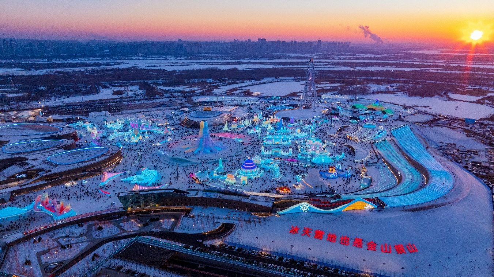
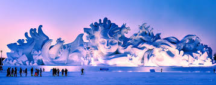
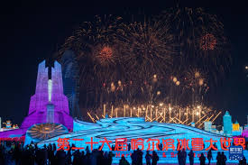

❄️ Kingdom of Ice & Snow
Ice & Snow World

The main event. Over 600,000 square meters of ice architecture lit with colorful LEDs. Ice slides, ice bars, and towering replicas of world landmarks carved from frozen river water.
Sun Island Snow Sculptures

Across the river from Ice World, this park features massive snow carvings — some over 30 meters tall. Unlike ice, snow sculptures are pure white and viewed during daylight.
Opening Ceremony

The official kickoff features a massive fireworks display over the ice castles. This is also when you'll see traditional ice swimming competitions (yes, in the frozen river).
🧣 Surviving -30°C: Festival Survival Kit
🧥 Layer Up
Thermal underwear + fleece + down jacket. Locals wear at least 4 layers. Rent a red army-style coat at the entrance if needed.
📱 Battery Drain
Phones die in minutes. Bring a power bank and keep it in your inner chest pocket (body heat helps).
🧤 No Exposed Skin
Hat, scarf, gloves, thick socks. Frostbite is real. Use hand warmers inside your boots.
☕ Warm-Up Zones
There are heated tents with hot drinks. Take breaks every 45 minutes.